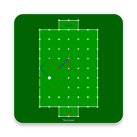
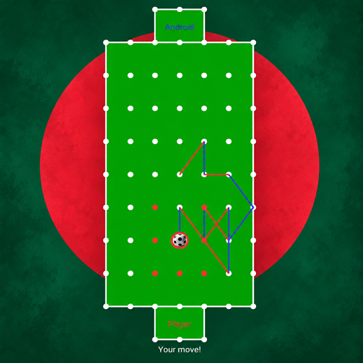

English · Polski · Deutsch · Français · Español · বাংলা · हिन्दी · नेपाली · اردو · አማርኛ · العربية · فارسی · ខ្មែរ · ລາວ · Malagasy · Монгол · မြန်မာ · සිංහල · Soomaali · Kiswahili

Gridline Soccer
Inapatikana kwenye
Pakua kwenye Google PlaySoka la karatasi, marafiki na mashindano yanayotegemea ujuzi.
Cheza na ushindane
Cheza dhidi ya Android, wape marafiki changamoto na jiunge na mashindano yanayopatikana. Panga hatua zako, fuata sheria za mchezo na panda kwenye viwango.
Mashindano
Soma na ukubali sheria zilizowekwa za mashindano kabla ya kujiunga. Zinaeleza ustahiki, uchezaji, muda wa mwisho na upangaji wa alama. Matokeo hutegemea uchezaji na sheria hizo. Kujiunga ni bure, bila ununuzi, ada ya kuingia, amana, dau, kamari au malipo kutoka kwa wachezaji. Matukio yanayopatikana na ratiba zinaweza kutofautiana.
Tayari una akaunti?
Ingia kwa akaunti yako ya Gridline Soccer ili kufikia wasifu na orodha ya marafiki. Global na Bangladesh hushiriki data ya akaunti na wasifu. Huwezi kutumia matoleo yote mawili kwenye kifaa kimoja. Kuondoa programu si sawa na kufuta akaunti yako ya pamoja.
Cheza kwa heshima
Chagua jina la utani linalofaa na uwaheshimu wachezaji wengine. Unaweza kuripoti mchezaji au jina la utani na kumzuia mchezaji mmoja mmoja kupitia menyu ya mchezaji katika programu.
Upatikanaji na msaada
Pakua Gridline Soccer kutoka Google Play. Upatikanaji hutegemea akaunti yako ya Google Play na kifaa. Unahitaji msaada? Msaada.
Matoleo mengine

Gridline Soccer Bangladesh